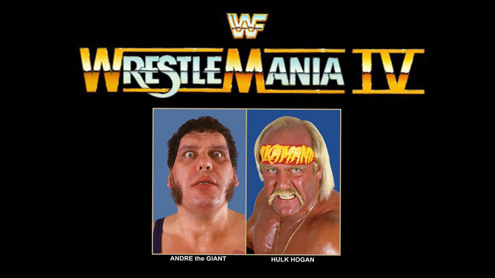

WrestleMania 4
The Tournament of Madness and Million Dollar Meltdowns

16 Matches, One Title, and Enough Drama to Keep a Soap Opera Going for Years
Watch along notes
I approach all my reviews with a genuinely open mind—sarcasm aside. My goal is always to go in thinking, This is going to be awesome. I’m going to love watching this. Too often, reviewers come in with preconceived notions, shaped by their memories of the event or the internet’s latest take on it, and that bias seeps into their analysis. But really, these events deserve to be revisited with the same excitement we had as kids—focusing on what made us fall in love with wrestling in the first place. I do my best to suspend disbelief, though I’ll admit, I have my “smart mark” moments too.
⚠️ NOTE: I don’t bother looking at the card while watching the event back.
Yes, I know from memory what some of the matches are,
but then most matches I don’t really remember.
Hence some of my comments are based on genuine reactions.
1. Bad News Brown wins the Battle Royal (last eliminates Bret Hart)
Let’s start off with pure chaos: the WrestleMania Battle Royal. A bunch of wrestlers crowded in the ring, hoping for glory. But in the end, Bad News Brown used his wits (and lack of morals) to throw out Bret Hart, claiming victory. Then Bret smashed the trophy like a kid having a tantrum because he didn’t get his way. Classic Hitman.
Highlight: Bret Hart proving once again that if he doesn’t win, nobody gets a trophy.
2. Ted DiBiase (with Virgil and André the Giant) defeated Jim Duggan (First round tournament match)
Ted DiBiase didn’t need luck; he had André the Giant and Virgil. Jim Duggan came in with his trusty 2x4, thinking he had a chance. Nope. DiBiase breezed through Duggan like a rich guy ordering a latte, with André looming ominously in the background to make sure Duggan didn’t even think about trying.
Highlight: The realization that no one’s patriotism can outshine a fat wallet and a Giant.
3. Don Muraco (with Superstar Billy Graham) defeated Dino Bravo (with Frenchy Martin) by disqualification (First round tournament match)
If there’s one thing Dino Bravo was good at, it was messing things up. And guess what? He managed to disqualify himself by shoving the referee like he was auditioning for a role in a bad cop show. Don Muraco just stood there, probably confused, but happy to take the win. Onward to the next round!
Highlight: Dino Bravo proving once again why no one asked him to teach a class on winning strategies.
4. Greg Valentine (with Jimmy Hart) defeated Ricky Steamboat (First round tournament match)
Greg “The Hammer” Valentine vs. Ricky Steamboat could have been a show-stealer if not buried in the endless tournament matches. Steamboat did his best Dragon impression, but Valentine was out here to make sure nobody had too much fun. The Hammer slowed the match to a crawl, winning with one of the most anti-climactic pinfalls ever. Valentine’s theme? No smiles allowed.
Highlight: Steamboat showing off his baby pre-match, as if to remind everyone he’s a family man who still can’t catch a break.
5. Randy Savage (with Miss Elizabeth) defeated Butch Reed (with Slick) (First round tournament match)
Randy Savage was on a mission tonight, and poor Butch Reed was just a bump in the road. Miss Elizabeth was a vision of style, but Savage was all business, hitting Reed with the flying elbow to move on. Butch’s biggest contribution was simply being there to give Macho Man an easy warm-up.
Highlight: Savage flexing for the crowd like it was only a matter of time before he’d hold the title. Spoiler alert: he was right.
6. One Man Gang (with Slick) defeated Bam Bam Bigelow (with Oliver Humperdink) by countout (First round tournament match)
Bam Bam Bigelow was agile for a big guy, but it wasn’t enough to stop One Man Gang from just… existing. Bigelow somehow lost by countout, because apparently, the Gang’s best move was just standing in the ring while Bam Bam was too busy trying to do cartwheels outside. Yup, that’s how it ended.
Highlight: Bam Bam probably regretting those cartwheels, but hey, at least the crowd got to see a 350-pound man defy gravity.
7. Jake Roberts vs. Rick Rude (with Bobby Heenan) ended in a time-limit draw (First round tournament match)
The Snake and the Ravishing One went head-to-head in a match that lasted way too long without anyone actually winning. 15 minutes of headlocks, stalling, and Rude flexing. The match ended with no victor, and the crowd? Probably wishing they could get those 15 minutes back.
Highlight: Rick Rude’s airbrushed tights, because when you’re not winning, at least you can look fabulous.
8. The Ultimate Warrior defeated Hercules (with Bobby Heenan)
The Ultimate Warrior ran to the ring, shook the ropes, grunted a few times, and basically destroyed Hercules in under 5 minutes. You could call this a match, but it was more like the Warrior showing off his cardio for the night. Herc, well, he got to play victim.
Highlight: The Ultimate Warrior’s ropes-shaking routine, where he burned more calories than he did in the actual match.
9. Hulk Hogan vs. André the Giant (with Ted DiBiase and Virgil) ended in a double disqualification (Quarter-final tournament match)
This wasn’t a match, it was a sequel to WrestleMania III with a lot less magic and a whole lot more shenanigans. Hulk Hogan and André the Giant squared off again, but the fun lasted about five minutes before both were disqualified for whacking each other with chairs. Classic Hogan and André.
Highlight: Hogan realizing he didn’t need to pin André again to stay relevant.
10. Ted DiBiase defeated Don Muraco (with Superstar Billy Graham) (Quarter-final tournament match)
Don Muraco tried to make it to the finals, but against Ted DiBiase, there’s only so much you can do without a few million bucks and a Giant at your disposal. DiBiase took Muraco down in under 6 minutes and strutted his way into the next round.
Highlight: DiBiase reminding everyone that in the WWF, money isn’t everything—it’s the only thing.
11. Randy Savage (with Miss Elizabeth) defeated Greg Valentine (with Jimmy Hart) (Quarter-final tournament match)
Randy Savage was on fire. Greg Valentine was… well, slow and methodical, as usual. But Savage didn’t care; he flew around the ring like a man with something to prove, and he hit his signature flying elbow to take the win. Valentine could have taken notes on speed.
Highlight: Miss Elizabeth continuing to look more glamorous than anyone in the building.
12. Brutus Beefcake defeated The Honky Tonk Man © (with Jimmy Hart and Peggy Sue) by disqualification (Singles match for the WWF Intercontinental Championship)
The Honky Tonk Man, forever the weasel, escaped Brutus Beefcake’s clutches with a DQ loss, holding onto his Intercontinental Championship like it was his personal lifeline. Beefcake got the win, but Honky Tonk kept the belt, laughing all the way to the next town.
Highlight: Honky Tonk proving that if you can’t win clean, just lose dirty and call it a victory.
13. The Islanders (Haku and Tama) and Bobby Heenan defeated The British Bulldogs (Davey Boy Smith and Dynamite Kid) and Koko B. Ware
Bobby Heenan in a match? Oh boy. The British Bulldogs and Koko B. Ware were solid, but this was about Heenan pulling off a sneaky win with the help of his Islanders. Koko probably wondered why he got stuck in this mess, and Davey Boy was too busy chasing after Heenan to realize his team lost.
Highlight: Bobby Heenan actually winning a match, which may have been the greatest upset of the night.
14. Randy Savage (with Miss Elizabeth) defeated One Man Gang (with Slick) by disqualification (Semi-final tournament match)
One Man Gang tried to intimidate Randy Savage, but ended up getting himself disqualified for bringing a cane into the match. Apparently, the Gang didn’t read the rulebook. Savage, ever the opportunist, advanced to the finals without even breaking a sweat.
Highlight: The referee disqualifying the Gang for attempting to use a weapon that he wasn’t even subtle about.
15. Demolition (Ax and Smash) (with Mr. Fuji) defeated Strike Force (Tito Santana and Rick Martel) © (Tag team match for the WWF Tag Team Championship)
Demolition was ready to break bones, and unfortunately for Strike Force, they were first on the menu. Rick Martel and Tito Santana gave it their all, but Demolition’s brute force and a little outside interference from Mr. Fuji meant new tag team champions. Ax and Smash celebrated like they just conquered a small country.
Highlight: Mr. Fuji proving once again that cheating never goes out of style.
16. Randy Savage (with Miss Elizabeth) defeated Ted DiBiase (with André the Giant) (Tournament final for the vacant WWF World Heavyweight Championship)
The Million Dollar Man vs. The Macho Man. DiBiase had André in his corner, but Savage had something more powerful: destiny (and Hulk Hogan, who showed up to even the odds). After an elbow drop from the top, Randy Savage was crowned the new WWF Champion, and he celebrated with Miss Elizabeth in a moment that screamed ‘80s glory. DiBiase went home without a title, but don’t worry, he still had his millions.
Highlight: Savage hoisting the championship and Miss Elizabeth like he had just won the lottery of life.
The Legacy: When Wrestling Was a Tournament, and Life Was Simple
WrestleMania IV may have been chaotic, long, and filled with more disqualifications than actual pinfalls, but it’s also a reminder of an era when wrestling was larger-than-life, and everything felt possible. The idea of a one-night tournament for the WWF Championship? It was pure wrestling magic — like a carnival ride of surprise twists, underdogs, and heroic comebacks, wrapped up in a four-hour spectacle that had us glued to our TV sets.
Looking back, it’s easy to laugh at the absurdities — Ted DiBiase trying to buy the title, One Man Gang thinking a cane was a secret weapon, and Randy Savage’s insane marathon run to the top. But beneath the sarcasm and spectacle was the beauty of professional wrestling in its golden age. The good guys were easy to cheer for, the villains easy to despise, and somehow, no matter what happened, we left the show feeling like we’d just witnessed something incredible.
And let’s not forget about the unforgettable moments: Randy Savage, after three hard-fought wins, standing tall as the WWF Champion with Miss Elizabeth by his side, celebrating with the crowd like it was the perfect ending to the greatest underdog story ever told. It wasn’t just about the title; it was about the journey, the storylines that pulled us in, and the wrestlers who became our heroes.
In a way, WrestleMania IV was like wrestling itself in the late ‘80s — big, brash, sometimes messy, but always memorable. The tournament format may have been a one-time experiment, but it was a night filled with characters who felt larger-than-life, with stakes that seemed monumental. No fancy pyrotechnics, no overly scripted promos, just pure wrestling magic that drew us all in and made us believe.
Sure, we can poke fun at the disqualifications, the endless matches, and the odd pacing. But at the end of the day, it’s the kind of chaos we miss, the kind that feels charming in hindsight. WrestleMania IV wasn’t perfect, but it was unforgettable. It reminds us of a time when wrestling was simpler, the heroes were pure, the villains were dastardly, and life, just like the matches, felt larger-than-life. And that’s a legacy worth celebrating.